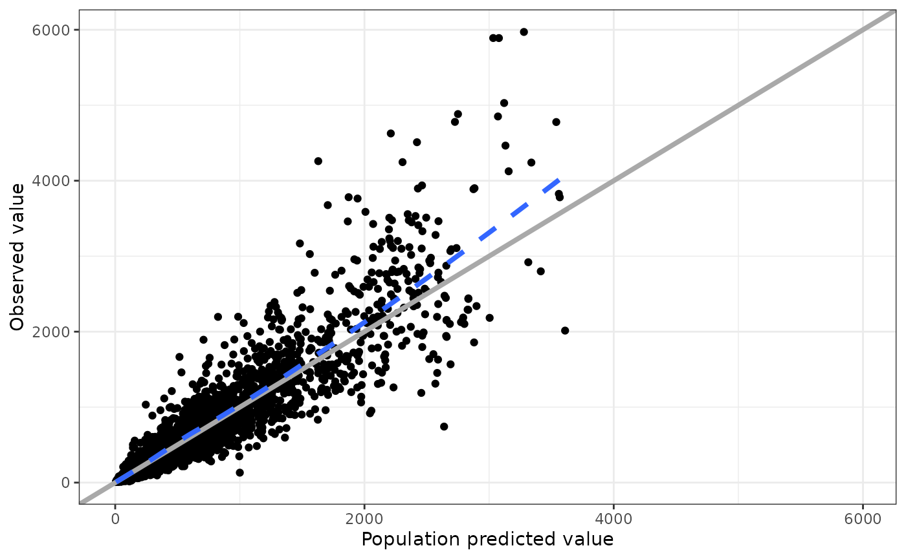
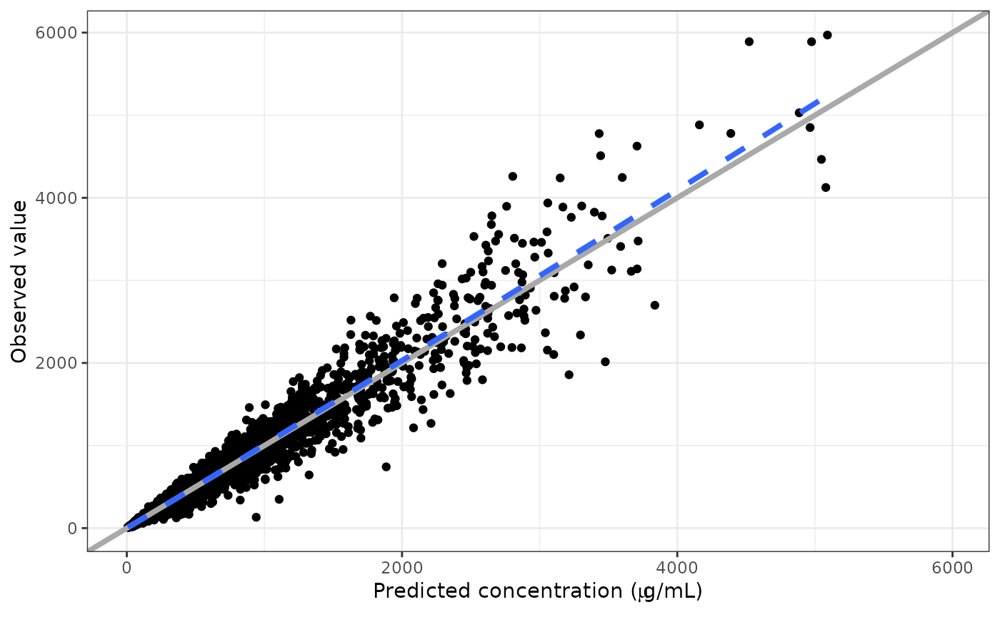
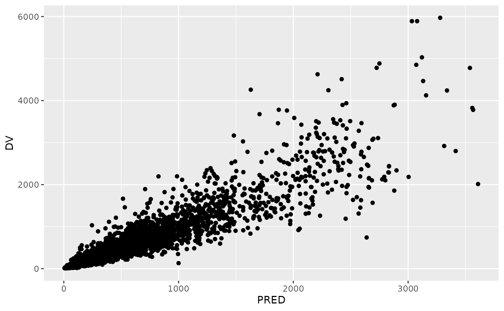
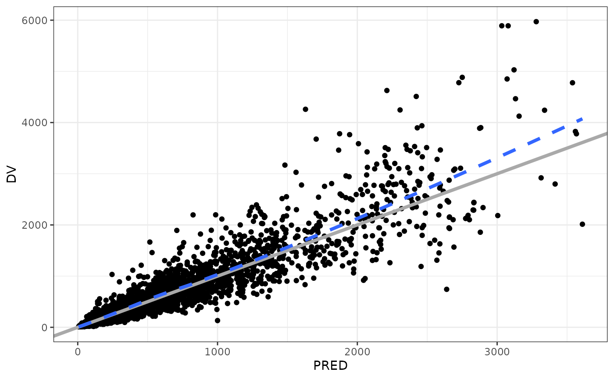
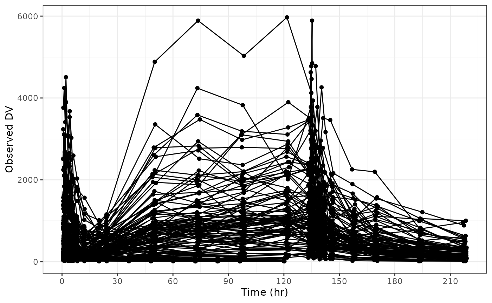
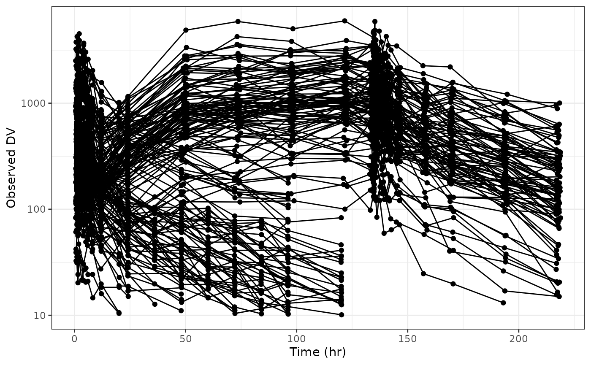

## Error in get(paste0(generic, ".", class), envir = get_method_env()) :
## object 'type_sum.accel' not found
library(dplyr)
data <- pmplots_data_obs()
dv_pred(data)## `geom_smooth()` using formula = 'y ~ x'
There are a couple of ways to do this. The easiest is to have the latex2exp package installed and write the TeX right in the label.
dv_pred(data, x = "IPRED//Predicted concentration ($\\mu$g/mL)")## Loading required namespace: latex2exp## `geom_smooth()` using formula = 'y ~ x'
Otherwise, you can trigger R plotmath by putting !! at
the start of the column label
dv_pred(data, x = "IPRED//!!'Predicted concentration (' * mu * 'g/mL)'")## `geom_smooth()` using formula = 'y ~ x'At some point, you might have to create a plot outside of pmplots, but you still want to adopt the pmplots look and feel.
p <- ggplot(data = data, aes(PRED,DV)) + geom_point()
p
Use these helpers to style the plot
## `geom_smooth()` using formula = 'y ~ x'
If you start with this plot
dv_time(data)you can use the xs and ys arguments to
customize the x or y axis. Pass a list of named data that corresponds to
arguments that you would pass to
ggplot2::scale_x_continuous() or
ggplot2::scale_y_continuous(). For example we can set the
breaks like this

But note there is an easier way using xby argument for
any of the *_time() plots
dv_time(data, xby = 30)You can put the y-axis on log scale
Again note there is a log argument to this function that
lets us do this more conveniently
dv_time(data, log = TRUE)While we’ve had some convenient shortcuts built into some of the functions, this should illustrate how you can control anything related to the axis scales in your plot.
Specifically not that you should not do this
dv_time(data) + scale_y_continuous(transform = "log10")## Scale for y is already present.
## Adding another scale for y, which will replace the existing scale.
This will result in a warning and clobber the scale that pmplots set.
Always customize the axis through xs and
ys.